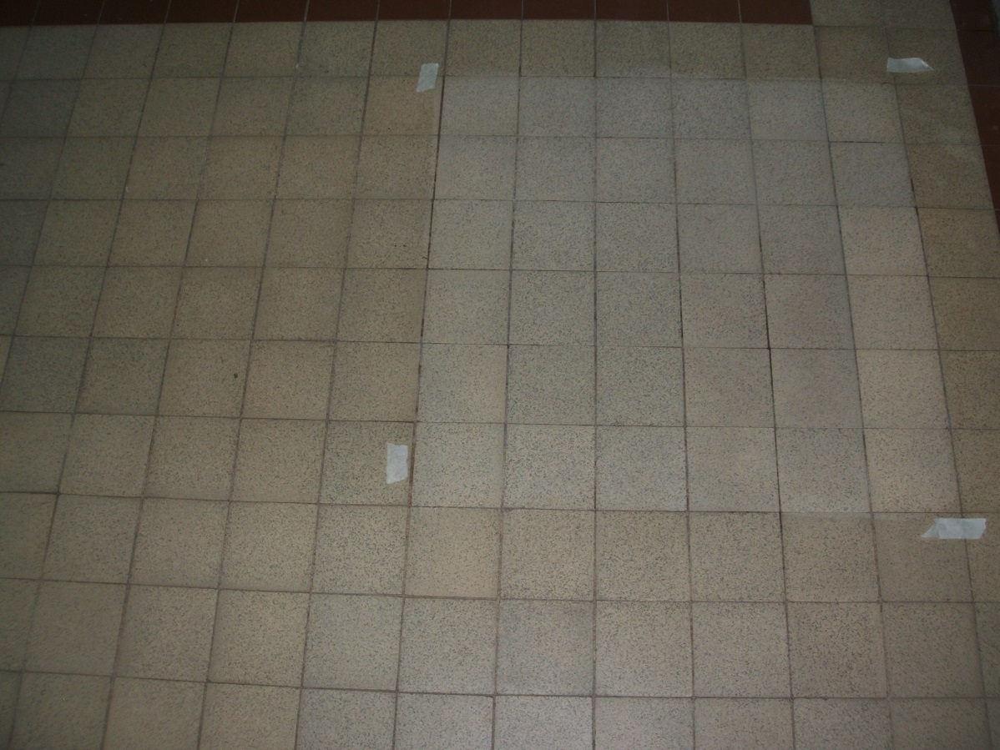
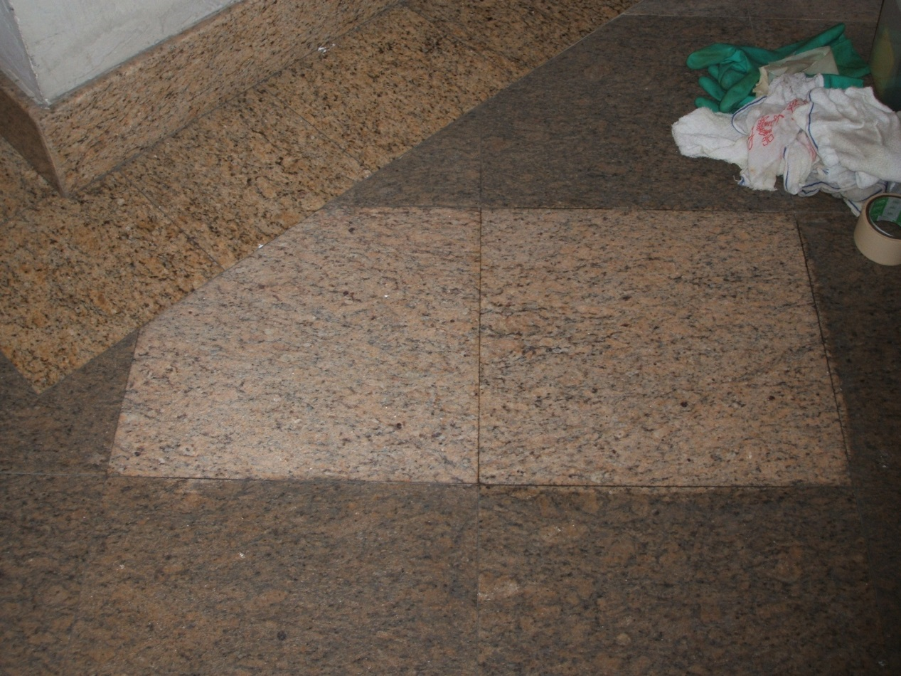
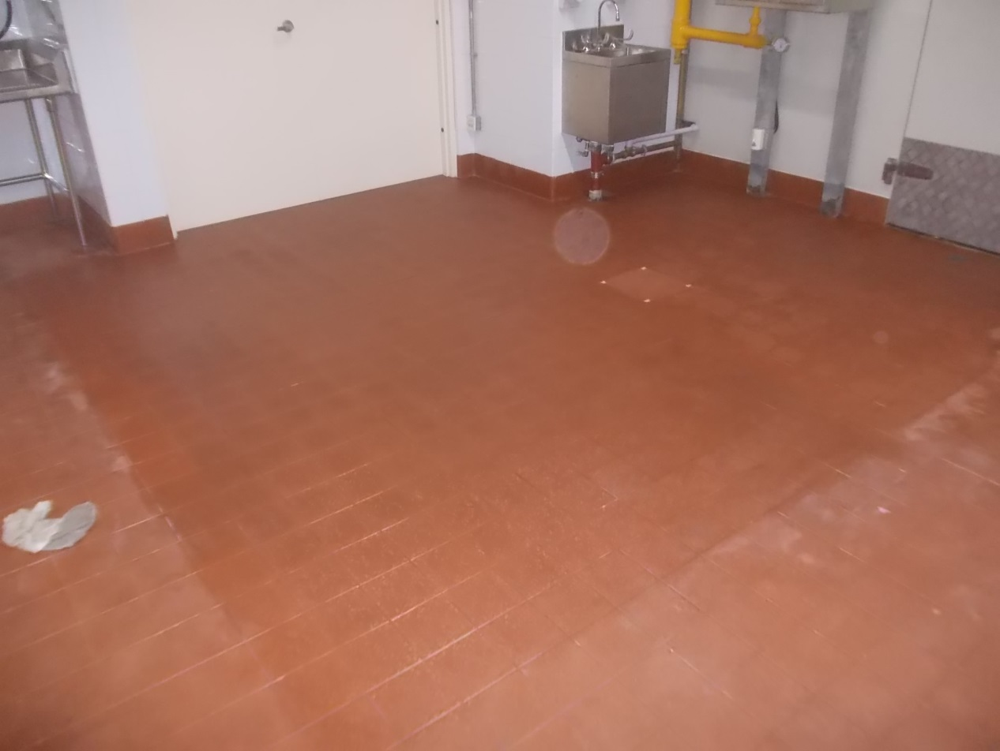

澳門泓信工程有限公司
Macau Wang Shun engineering limited
石材清潔及護理
堅硬亮麗的天然石材已由原始的建築材料轉變為現在的裝飾材料，廣泛地應用在酒店及餐廳，不盡人意的是，當每項工程落成後，在短短的時間里石材表面普遍會出現吐黃、锈斑、霧面、白华（出碱）、水斑不干（俗稱石材花臉）等污染。這現象令業主及建築商、工程技術人員大傷腦筋，歸根究底是沒有找到一個科學的石材養護方法和更好的石材防護產品。
泓信工程成為了新加坡千秋環球的亞洲總代理，該公司的清潔產品屢獲殊榮，而且清潔效能的聲名威震海外，它能徹底完美地清除附於石材表面因環境與人為因素造成的各種污染，再經防護劑處理，令施工前的養護真正做到防患於未然，同時該特效的翻新拋光技術，能讓你在短時間內恢復天然石材的光彩亮麗，保證業主和建築商的利益。千秋環球公司的石材護理產品有多達100多個品種，包括有清潔、防護、養護、增亮、增艷、修補、病變處理，翻新等多種效能。泓信的產品能讓您的石材永遠健康，光亮如新。
